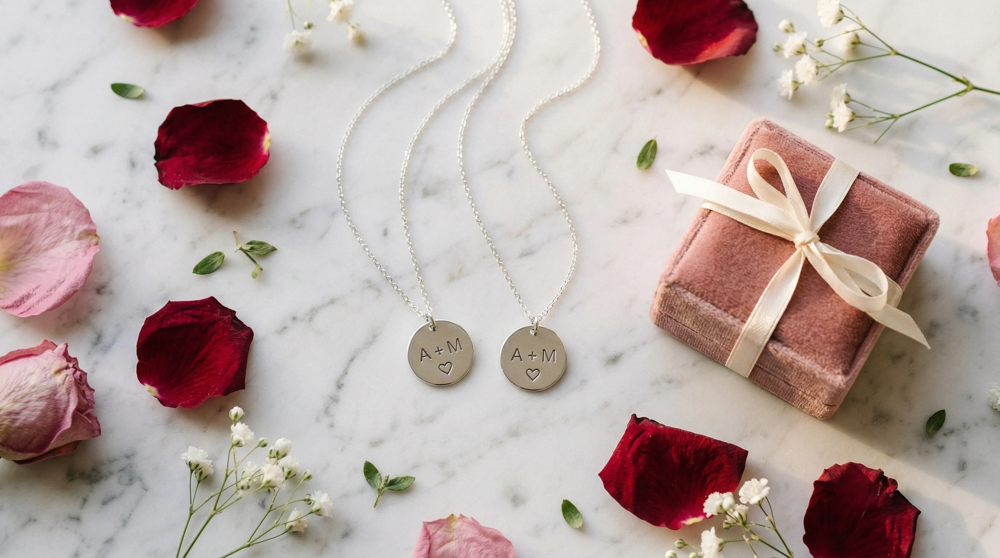

ペアネックレスは、デザイン・素材・長さの3つを順に決めると迷いにくくなります。クリスマスや記念日の贈りものにするなら、届く日と付属品も先に確かめておきましょう。
- デザイン：まったく同じものにするか、形や色だけを共通にするか
- 素材：商品名や説明の素材表記を見る
- 長さ：ネックレスの飾り（ペンダントトップ）を、鎖骨の近くか胸元か、どの位置に見せたいか。ふたりそれぞれで考える
デザインは「まったく同じ」か「形や色だけ共通」かを先に決める
おそろいらしさをはっきり出したいなら、ふたりでまったく同じデザインを選ぶ方法があります。
ふたりの好みや服の雰囲気が違うなら、形だけを共通にする選び方もできます。たとえば、ハートの形はそろえて、大きさや色味をそれぞれに合わせる方法です。
ふたつを並べると1つの形になるデザインは、記念日の贈りものらしさを出しやすいのが魅力です。ひとりで身につける日の見え方も、商品写真で確かめておくと選びやすくなります。
素材は「素材表記」を見て決める
商品名だけでなく、チェーンや留め具の説明も見ておきましょう。
サージカルステンレスは、汗や水に強く、錆びにくい素材として、アクセサリーに広く使われています。使ったあとに柔らかい布で拭くなど、日々のお手入れがしやすいのも特徴です。
シルバー925は、銀を92.5%含む素材です。上品な光り方が魅力ですが、空気や汗の成分で黒ずむことがあるので、お手入れをしながら使います。
金色のネックレスは、土台の素材と、表面の加工（メッキなど）を分けて確かめてください。表面の加工がすり減ると、土台の素材が肌に触れる場合があります。お手入れの方法も加工によって変わるので、製品ごとの案内に従いましょう。
| 素材（土台） | 特徴 | お手入れ |
|---|---|---|
| サージカルステンレス | 汗や水に強く、錆びにくい | 使ったあと柔らかい布で拭く |
| シルバー925 | 銀を92.5%含む。上品な質感だが黒ずむことがある | 製品の案内に合う方法で磨く |
※素材の一般的な傾向です。肌に合うかどうかには個人差があります。製品ごとの表示と注意書きを優先してください。
金属アレルギーが気になる方は、金属アレルギーが気になる方の素材比較で素材ごとの特徴を見てから選んでください。肌に違和感が出たときは、使うのを控えましょう。
長さは「飾りを見せたい位置」から決める
ペアだからといって、長さまで同じにする必要はありません。手持ちのネックレスがあれば、次の順で測ると具体的になります。
- 手持ちのネックレスをつけて鏡を見て、飾りがちょうどよい位置に来るものを1本選ぶ
- 留め具（引き輪やカニカンなど、開け閉めする金具）をどの輪にかけているかを覚えておき、ネックレスを外す
- チェーンをまっすぐ伸ばし、留め具の先から、ふだん留め具をかけている輪までの長さをメジャーで測る
飾りの長さは、測った長さに入れません。
測った長さは、商品ページに書かれた「チェーンの長さ」と比べます。その長さに留め具やアジャスター（長さを調節できる短い鎖）が入っているかは商品ごとに違うので、説明を見ておきましょう。あわせて、次の2つも確かめます。
- 欲しい長さのチェーンが売られているか、アジャスターで何cmまで調節できるか
- ペアの2本で、別々の長さを選べるか
手持ちのネックレスが無いときは、店頭で試着してみるか、商品ページの着用写真と長さの案内を見て決める方法もあります。
目的別の選び方
| こんなふたりに | 選び方の目安 |
|---|---|
| 毎日つけたい | お手入れのしやすさで選ぶなら、素材表記に「サージカルステンレス」とあるもの。使い方の注意は商品ごとに確かめる |
| 贈りものらしさを出したい | ふたつを並べると1つの形になるデザインや、ケースが付いているもの |
| きらっと光る石がほしい | 商品名や説明に「ジルコニア」とあるもの |
aliba（アリバ）のペアアイテムは、一覧で写真と商品名を見比べられます。付属品や素材は、リンク先の商品ページの説明で確かめてください。
贈る前に確かめたい3つのこと
- 素材の表記：土台の素材と表面の加工がはっきり書かれているか。金属アレルギーが気になる方は、留め具の素材も見ておきましょう。
- 名前や日付を入れたいとき：好きな文字を指定して入れられる商品か、購入前に商品ページで確かめましょう。
- 届く日と付属品：記念日に間に合うか、ケースが付いているか。
よくある質問
Q. ペアネックレスはまったく同じデザインのほうがいいですか？
どちらでもかまいません。おそろいらしさを出したいなら同じデザインを選びます。好みや服の雰囲気が違うなら、形や色だけを共通にする選び方もあります。
Q. 毎日つけるなら、どの素材を選べばいいですか？
お手入れのしやすさで選ぶなら、サージカルステンレスが候補になります。汗や水に強く錆びにくい素材として、アクセサリーに広く使われています。肌に合うかどうかには個人差があるので、違和感があれば使うのを控えてください。
Q. ペアネックレスの長さは、ふたりで同じにするべきですか？
同じにする必要はありません。手持ちのネックレスで、飾りがちょうどよい位置に来るものを1本選びます。留め具の先から、ふだん留め具をかけている輪までの長さを測ります。その長さのチェーンが売られているか、アジャスターで調節できるかを、商品ページの「チェーンの長さ」で確かめてください。
ふたりで長く使うなら、素材の表記とお手入れのしやすさまで見て選ぶのが大切なポイントです。購入後のケアはサージカルステンレスジュエリーのお手入れ方法もあわせてご覧ください。